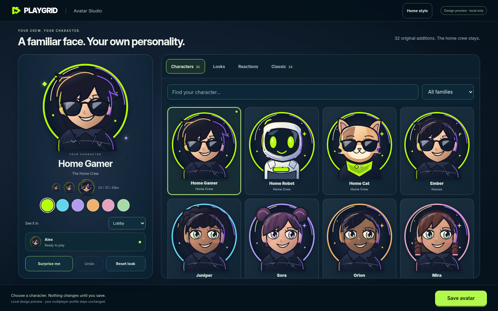

Avatar Studio · 1440px


An incremental design package for Issue #61. Existing premium game directions remain approved. Production code, homepage and servers are unchanged.

Remaining difference for review: SVGs preserve the home-family cues but do not exactly reproduce its painted texture. Claude implements production only after review. Current Go Fish contract is ranks 2–14, Ace=14, correcting the earlier #58 handoff.